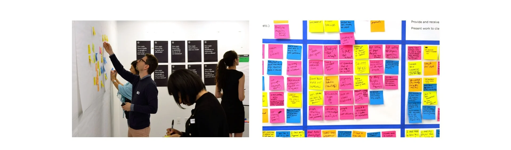
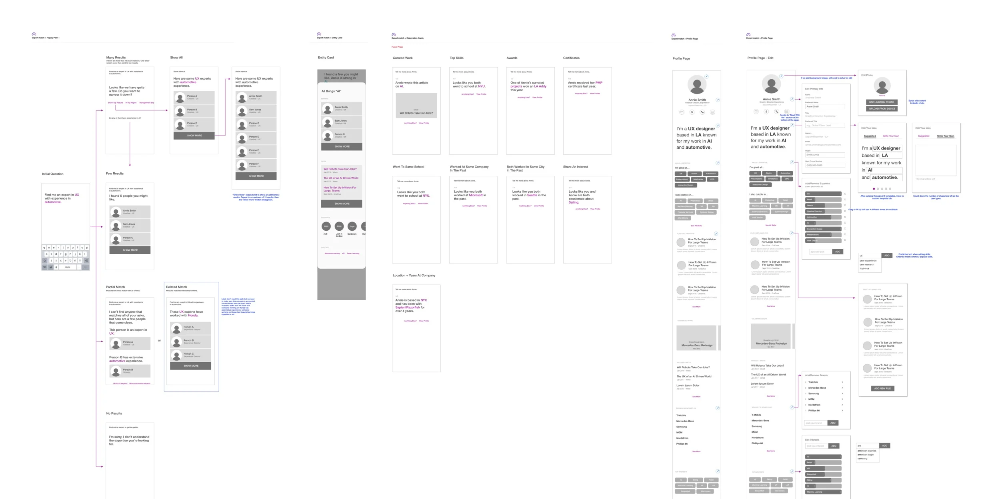
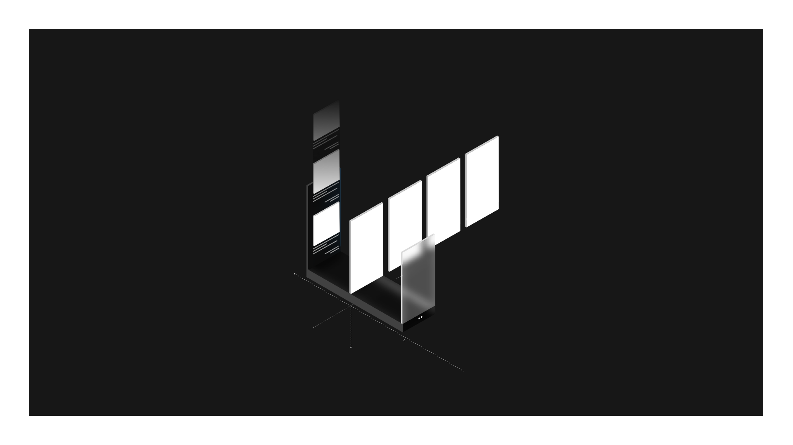
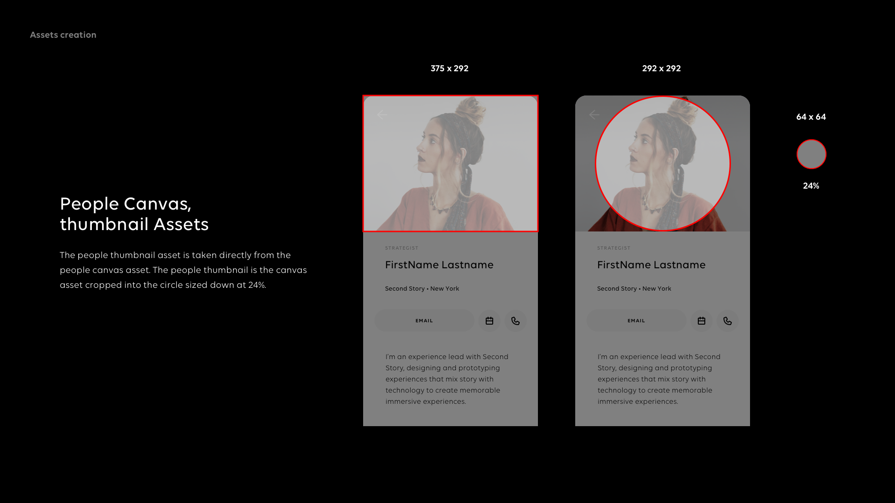
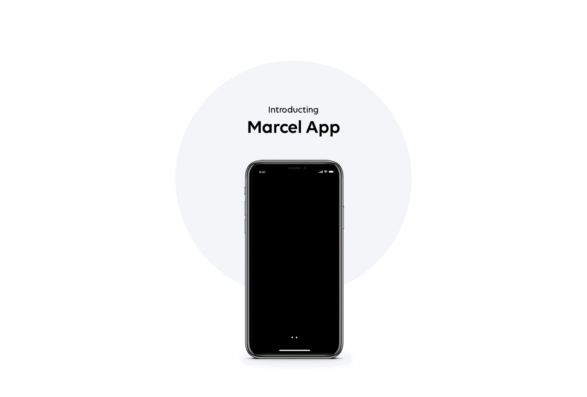
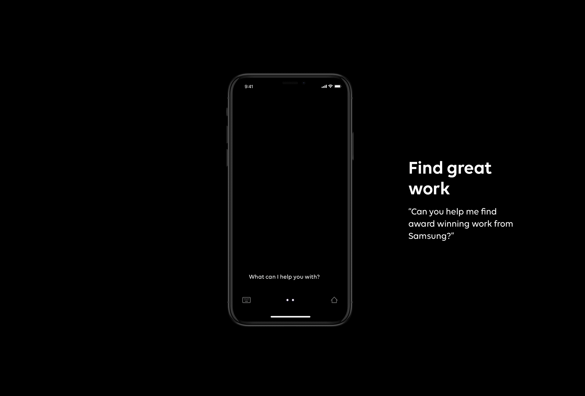

Marcel 1.0
How do you connect 80,000 creative minds across 200 disciplines in 130 countries? By building a platform that makes the right connections to knowledge, opportunity, and each other.
An AI platform to change an entire industry.
Introducing Marcel: an AI platform built to fundamentally change Publicis’s business, and the creative advertising industry along with it. The platform connects all 80,000 Publicis employees to provide more seamless communication, collaboration, and anticipation of client needs. Most importantly, it was designed to spark creativity within the company.

Building Marcel from the ground up.
Our team, made up of researchers, designers, strategists, managers, content people, data scientists, and engineers, began to build Marcel from nothing. The first form of Marcel was a mobile app every Publicis employee would have access to. Through workshops and interviews with stakeholders, employees, and clients, we identified and prioritized the features that mattered most to Publicis Groupe.

Conversation as the primary navigation.
Marcel is an AI-based app, and conversation is the primary way to navigate through different features and content. We created multiple conversation trees to start sketching out what the user journey might look like. Below is an example tree for a simple action: scheduling an appointment with someone in the network.

Wireframes for every journey.
We sketched out the various user flows and the different journeys to reach every feature. Below is an example of wireframes that illustrate the journey of finding an expert in a particular subject, one of the core jobs Marcel was built to do.

A spatial model for the layers of the app.
The visual design team designed the logic, structure, usage, and rules around the visual language and its elements. The spatial model below shows the different layers of space that exist inside the Marcel app: the conversation layer between the user and Marcel sits at the back, the content layer sits in the middle, and the utility layer sits on top.
The slides that follow are excerpts from the style guide, defining how each design element gets used.




From mobile to the web.
The launch surface was a native mobile app. After the first release of the Marcel app, the team began designing for the web experience, extending the conversational model to a desktop context where the rest of an employee’s work already lived.




Launched to the entire company.
Marcel 1.0 launched company-wide in 2019, becoming the first time Publicis Groupe operated as a single addressable creative network. The product evolved well beyond 1.0; the foundation work I contributed to shaped the visual language and information architecture that carried through subsequent releases.